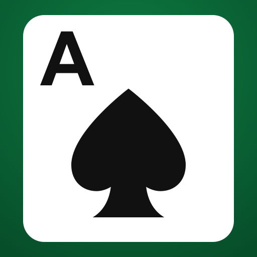
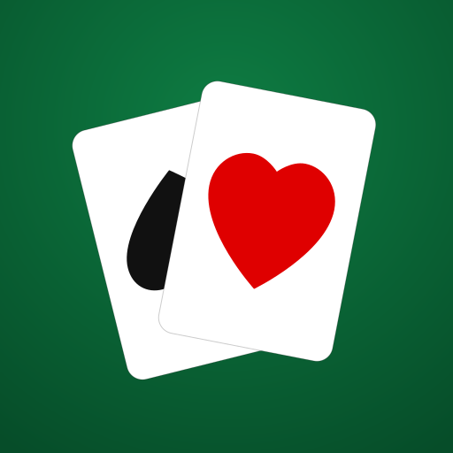
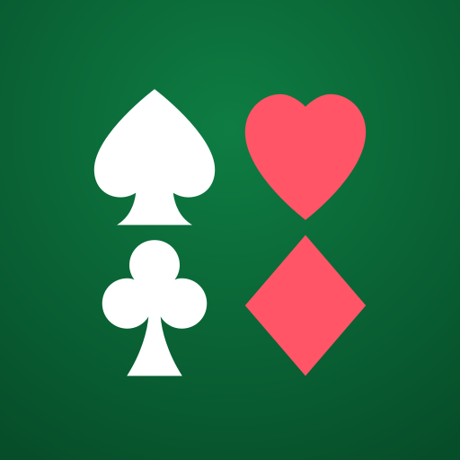
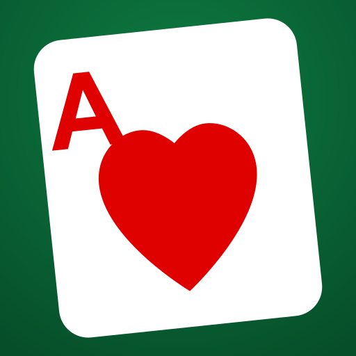

Shown at real home-screen sizes with iOS-style rounded corners. Tell me a letter — or what to change (colors, which suit, layout) and I'll iterate.
Minimal, reads clearly even tiny.

Iconic single card.

Says "card game" — back spade is a bit hidden; I can fan it wider.

Colorful; clearly cards.

Red variant, angled card.